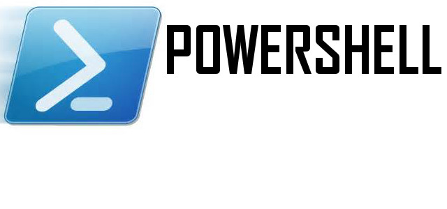
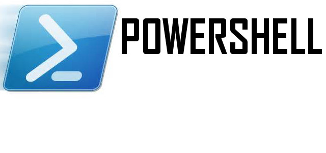

Powershell er et verktøy som kommer med windows. Jeg vil her forklare hvordan du setter opp powershell på din maskin.
Du må du laste ned siste versjon av Microsoft .NET framework. Her er en link til Microsoft sin offisielle side:
.NET framework 4.5
dette er for tiden den nyeste versjonen.
Gå på start menyen, velg alle programmer og velg tilbehør. Under mappen PowerShell vil du finne konsollen og noe som heter
PowerShell_ISE. Vi må gjøre et par ting i powershell for å få det til å fungere som det skal. Det første du bør gjøre er å
skrive "get-host" for å se vilken versjon av powershell du har. Har du versjon 4.0 er dette den nyeste per dags dato.
For at script kan kjøres på maskinen må du tillate dette ved å skrive "set-executionpolicy -executionpolicy remote-signed"
Det vil si at alle script som du har på maskinen, som er signert vil kjøre. Andre script som kan være potensiellt skadelige
kommer sansynligvis ikke få lov til å kjøre med denne policy. PowerShell brukes av administratorer for å gjøre forskjellige
oppgaver som kreves. Hvis samme oppgave må gjøres på flere maskiner eller gjøres ofte, bruker man det som kalles et
PowerShell script. En samling av kommandoer eller cmdlets som det heter i PowerShell som lagres i en .ps1 fil. Jeg har lagt
en .ps1 fil i slutten av siste artikkel på denne siden.
Verb-noun
I PowerShell heter kommandoene cmdlets. Disse er satt sammen av et verb, og et noun (substantiv) f.eks: get-host, get-childitem, get-process osv.
legg merke til at det er entalls form i substantivet. Jeg har lagt ut et script som handler om dette og det finner du her: verb-noun
Finne fram og starte å bruke PowerShell
Videre er det lurt å opdatere hjelpe systemet i PowerShell. Dette er meget bra og microsoft har virkelig laget et kraftig
hjelpeverktøy for powershell. Kommandoene for hjelp er flere. Du kan bruke "help" eller "get-help". Det er viktig å forstå
strukturen på kommandoene. Kommandoer er et verb. Som "Get" og "set" som du vil se i alle kommandoer samt et substantiv som
"service" eller "process". Legg merke til at de bruker "process" og ikke "processes" selv om det er flere. Dette er en huske regel.
Men tilbake til hjelpe systemet. Det du kan gjøre er bare å skrive "update-help" så vil powershell koble seg på nettet og laste ned
de siste hjelpe filene. Du kan tilogmed få hjelp på nett, da skriver du f.eks "get-help get-help -online" som gir det hjelp om "get-help".
Litt hjelp på veien:
Har lagt ut en pdf jeg har skrevet om WMI (Windows management Instruments). Dette er for drevene PowerShell brukere og ikke for de som nettop har starta.
Hvis du lurer på noe eller har spørsmål så bare ta kontakt. Her er dette pdf: PowerShell WMI Hvis du er
interessert i å lære PowerShell kan jeg anbefale en bok som heter "PowerShell Step by Step 3.0" av Ed Wilson. Jeg har lagt ut et script som ordner
oppsett og hjelpesystem for deg, hvis du har problemer. Det finner du på denne lenken: Lenke til examples.ps1 For mer powershell gå til
 
